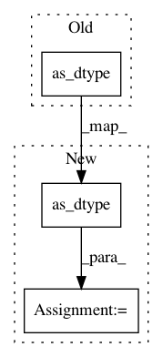

3a54e3af7fc0a9417d379d5e6ff12eb45795f9c4,examples/transformer_standalone.py,,my_model_fn,#Any#Any#Any#Any#Any#,185
Before Change
variable_dtype = mtf.VariableDType(
tf.as_dtype(FLAGS.master_dtype),
tf.as_dtype(FLAGS.slice_dtype),
tf.as_dtype(FLAGS.activation_dtype))
// PREDICT mode
After Change
// See comments in the FLAGS
master_dtype = tf.as_dtype(FLAGS.master_dtype)
if FLAGS.slice_dtype:
slice_dtype = tf.as_dtype(FLAGS.slice_dtype)
elif not FLAGS.tpu or FLAGS.mode == "train":
slice_dtype = tf.float32
else:
slice_dtype = tf.bfloat16
if FLAGS.activation_dtype:
activation_dtype = tf.as_dtype(FLAGS.activation_dtype)
else:
activation_dtype = tf.bfloat16 if FLAGS.tpu else tf.float32
variable_dtype = mtf.VariableDType(master_dtype=master_dtype,
slice_dtype=slice_dtype,
activation_dtype=activation_dtype)
// PREDICT mode
if mode == tf.estimator.ModeKeys.PREDICT:
mtf_samples = model.decode(
In pattern: SUPERPATTERN
Frequency: 5
Non-data size: 3
Instances
Project Name: tensorflow/mesh
Commit Name: 3a54e3af7fc0a9417d379d5e6ff12eb45795f9c4
Time: 2019-03-09
Author: noam@google.com
File Name: examples/transformer_standalone.py
Class Name:
Method Name: my_model_fn
Project Name: GPflow/GPflow
Commit Name: 2974b94deea2dd84ec90059f946159bbd8b1fc43
Time: 2019-10-07
Author: st--@users.noreply.github.com
File Name: gpflow/config/__config__.py
Class Name:
Method Name: set_default_float
Project Name: OpenNMT/OpenNMT-tf
Commit Name: c141e570011e7adf3634bd65a3e7de30d8fbdca2
Time: 2018-10-18
Author: guillaumekln@users.noreply.github.com
File Name: opennmt/utils/checkpoint.py
Class Name:
Method Name: _create_checkpoint_from_variables
Project Name: OpenNMT/OpenNMT-tf
Commit Name: 6a1179c46ced0d0238911b00e61fc6079c7568c7
Time: 2018-10-17
Author: guillaumekln@users.noreply.github.com
File Name: opennmt/tests/checkpoint_test.py
Class Name: CheckpointTest
Method Name: _generateCheckpoint
Project Name: GPflow/GPflow
Commit Name: 2974b94deea2dd84ec90059f946159bbd8b1fc43
Time: 2019-10-07
Author: st--@users.noreply.github.com
File Name: gpflow/config/__config__.py
Class Name:
Method Name: set_default_int